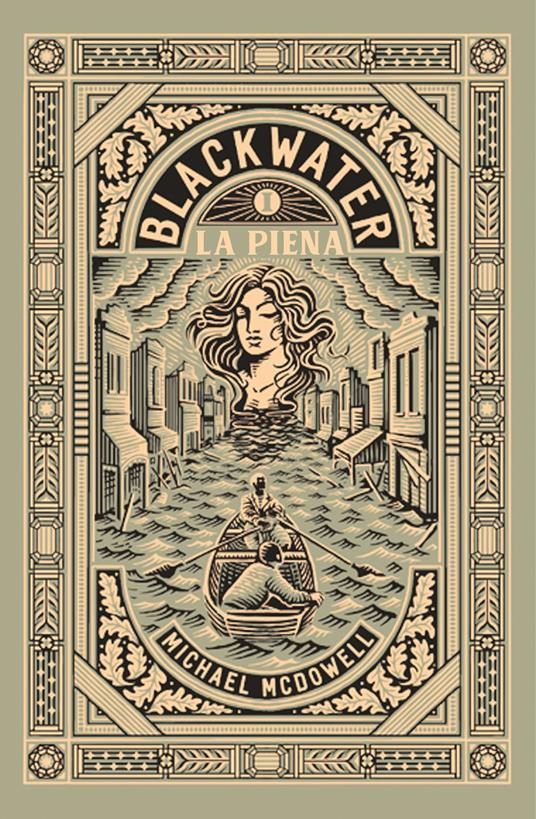
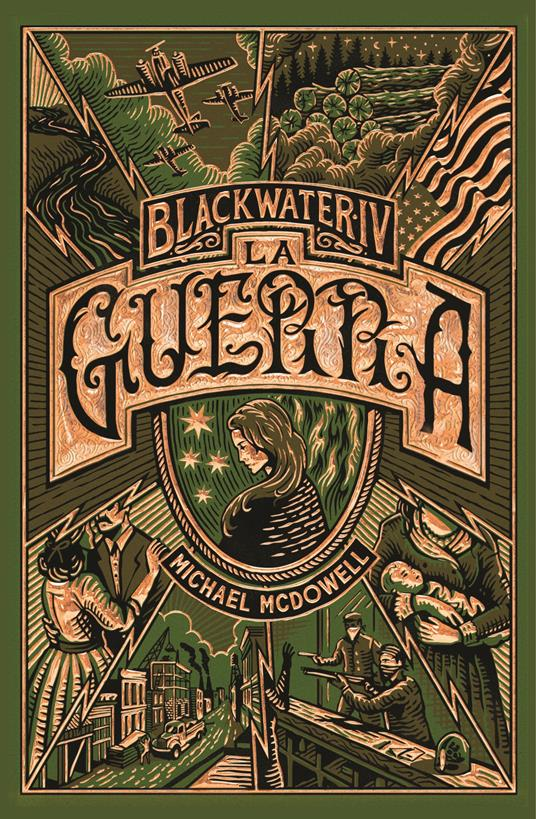
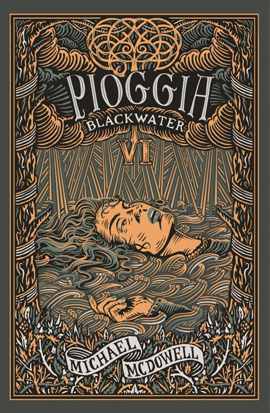

Alabama, 1919. L’esondazione del fiume Perdido spazza via l’omonimo villaggio e dà inizio a una nuova fase nella vita di tutti i suoi abitanti; in particolare in quella di Oscar Caskey, erede di una delle famiglie industriali più potenti della zona, che nell’hotel Osceola sommerso dall’acqua trova l’affascinante, misteriosa Elinor Dammert e la porta in salvo…innamorandosene perdutamente.
Di Elinor non si conosce il passato né la famiglia, ma questo non impedirà a Oscar di corteggiarla contro la volontà di sua madre, la capofamiglia Mary-Love, innescando una lotta per il potere tra le future suocera e nuora in un conflitto sempre più di tipo matriarcale. Nei sei volumi della saga si raccontano cinquant’anni di conflitti, nascite, morti più o meno naturali e matrimoni quasi sempre contrastati.
Intorno alla famiglia Caskey scorre la vita del villaggio di Perdido dove tutti sanno tutto di tutti – eccetto che di Elinor -, con le sue miserie ma con anche il suo sviluppo e la sua prosperità, in un cambiamento continuo che segue gli alti e bassi della Storia.
Cosa nasconde Elinor? Il suo carattere forte, i suoi modi semplici ma anche regali e il mistero del suo passato la caratterizzano senza dubbio come il personaggio più interessante di tutta la serie. Un personaggio che più che parlare fa, che esercita il suo potere con caparbietà e sa aspettare pazientemente il compimento delle sue vendette. Elinor sembra sempre essere piena di intuizioni a cui nessuno crederebbe ma che si rivelano puntualmente esatte, soprattutto quando si tratta di prevedere i ritmi della natura o del fiume Perdido. E soprattutto, che collegamento ha Elinor con la creatura mostruosa avvistata intorno a Perdido, nei pressi del fiume?
Dal suo immediato successo commerciale nel lontano 1983, questa serie continua a far parlar di sé. I motivi di questo meritato successo sono presto detti, primo fra tutti un cast di personaggi credibile e ben bilanciato. Tutti i membri della famiglia Caskey sono ben delineati a tutto tondo e sono talmente diversi l’uno dall’altro che i contrasti tra le loro visioni del mondo e i loro caratteri sono assicurati, in un gioco di conflitti che aiuta a portare avanti la trama – e in certi punti a divorare le pagine.

Ciò che davvero colpisce di questa serie è che, nonostante sia di genere gotico/horror e le scene horror siano davvero ben fatte – crude, con una suspense che ti resta addosso appiccicosa come l’acqua del fiume Perdido -, gli elementi terrificanti sono in realtà marginali. A un quarto del primo volume avevo già smesso di preoccuparmi del mostro e mi interessava di più sapere come sarebbe andata a finire la lotta di potere tra Mary Love e Elinor. Michael McDowell è poi abilissimo nel tornare a ricordarci il mondo viscido, nascosto, misterioso in cui il mostro si muove e finisce le sue vittime. Gli eventi paranormali inseriti in una cornice realistica rendono Perdido inconfondibile e allo stesso tempo il continuo avanti e dietro tra situazioni horror e eventi di vita quotidiana con relative diatribe di famiglia tengono la tensione narrativa in quota quasi fino alla fine della serie.
Michael McDowell è un maestro della prosa: a dispetto di tante pagine, il testo non è mai pesante né scontato e anzi scorre senza mai far desiderare al lettore di saltare qualche capitolo. Il finale, anche se in certa misura prevedibile, lascia il lettore a confrontarsi con considerazioni ampie sull’eternità ciclica del tempo e della natura.

Solo due elementi non mi hanno troppo convinta riguardo alla serie. Per i primi quattro volumi McDowell costruisce situazioni narrative e tesse linee di trama ben calibrate e approfondite, tuttavia – e purtroppo – perde di mordente negli ultimi due volumi, dove alcuni avvenimenti o comportamenti dei personaggi sembrano ricalcare con minime variazioni altri già visti nei precedenti libri della serie
Un altro elemento che ho percepito mancante nel testo è stata una spiegazione convincente dei fenomeni paranormali, o anche degli sviluppi di trama che riguardassero di più il mondo del mostro del fiume. Le pagine che McDowell dedica agli eventi legati alla creatura avrebbero giustificato un’incursione del lettore in quel mondo nascosto, o avrebbero giustificato un disvelamento del mistero agli occhi dei personaggi, cosa che invece non avviene.
Nonostante queste due pecche, Blackwater rimane comunque una serie di altissimo livello e ha un potere tutto suo particolare di rimanerti addosso anche molti giorni dopo aver letto l’ultima pagina – di nuovo, come l’acqua melmosa del fiume Perdido.